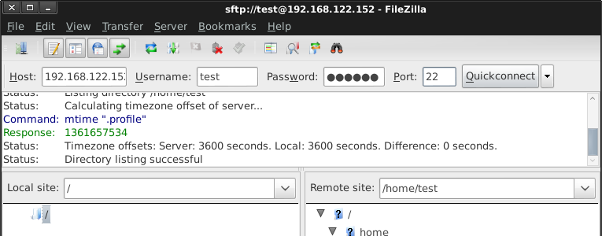
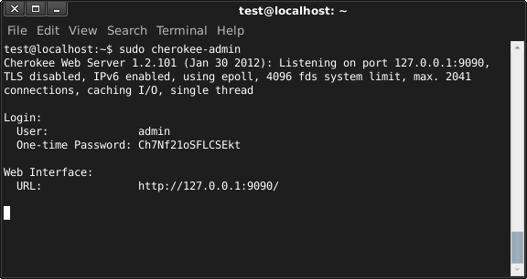
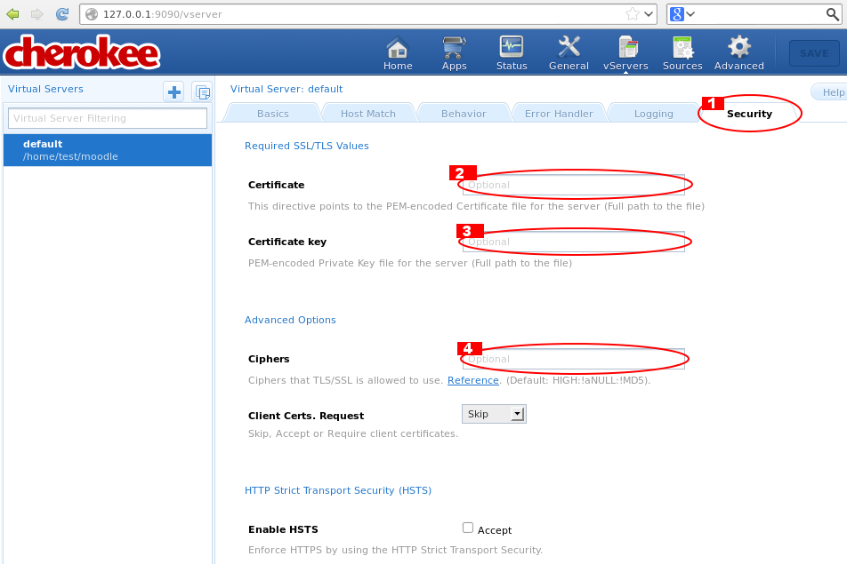
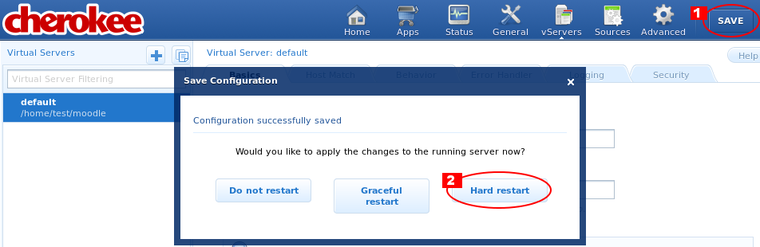
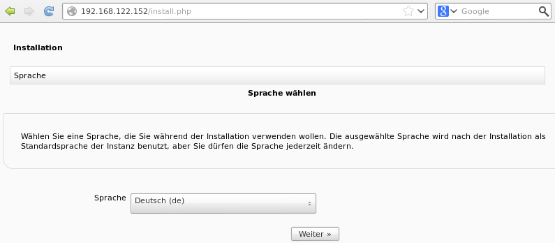
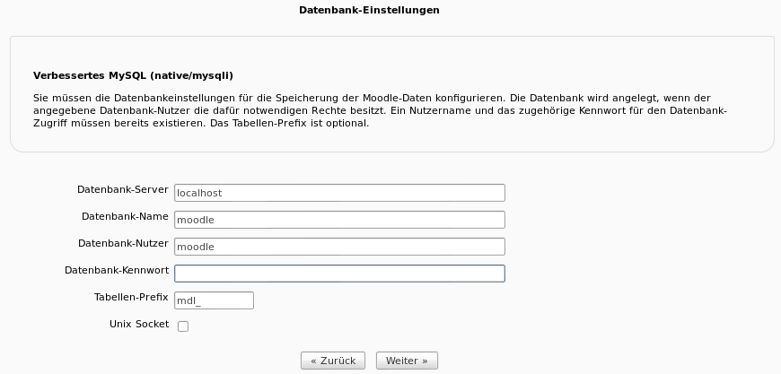
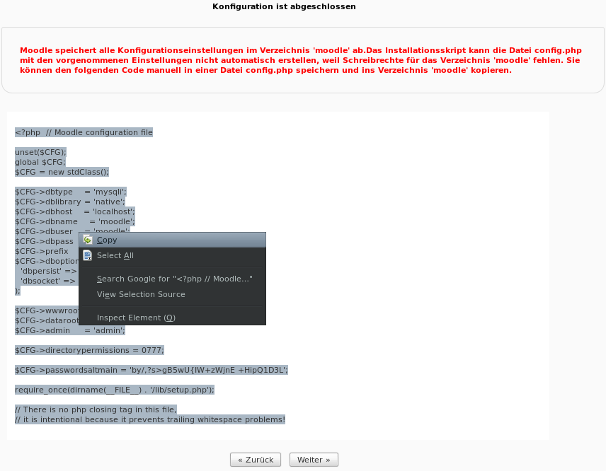

Verbinden mit dem Server über SSH:
ssh <Nutzername>@<IP-Adresse> -L 9090:localhost:9090- So könnte dies z.B. aussehen:

- Der Parameter '-L' am Ende sorgt dafür, dass der Port 9090 weitergeleitet wird, da sich Cherokee über das Web-Interface nur über Localhost konfigurieren lässt
Installieren der notwendigen Pakete (Cherokee, MySQL, PHP) über die Ubuntu Paketverwaltung:
sudo apt-get install mysql-server php5 php5-mysql php5-curl php5-cgi php5-xmlrpc php5-gd php5-intl cherokee- Sie werden während der Installation nach einem Passwort für MySQL gefragt:

Einrichten einer Datenbank und eines Nutzers für Moodle in MySQL:
mysql -u root -p
mysql> CREATE DATABASE moodle DEFAULT CHARACTER SET utf8 DEFAULT COLLATE utf8_general_ci;
mysql> create user 'moodle'@'localhost' identified by '<Passwort>';
mysql> grant all on moodle.* to moodle@localhost;- So könnte dies z.B. aussehen:

Hochladen der Moodle-Dateien auf den Server:
- Die einfachste Möglichkeit ist der Upload über das Programm Filezilla:

Eine wesentlich schnellere und für Entwickler komfortablere Alternative besteht möglicherweise darin, die Daten via SSH-Shell direkt aus einem GIT-Repository zu klonen (mitunter verbieten Firewalleinstellungen dies):
sudo apt-get install git && git clone https://github.com/kyro46/elateXam.git
Starten des Cherokee Admin-Webinterfaces:
sudo cherokee-admin- Es werden Ihnen die Zugangsdaten und der Link zum Webinterface angezeigt, welche Sie in den Browser kopieren können:

- Aus Sicherheitsgründen ist der Zugriff auf das Webinterface nur solange möglich, bis Sie den Prozess beenden (beispielsweise mit <Strg>+<C> oder durch einem Reboot).
- Auch wird das Passwort jedes Mal neu generiert, Sie müssen es sich also nicht merken.
- Unter VServer-Einstellungen (1) auf Rule-Management klicken (2):

- Unter 'Languages' PHP auswählen und hinzufügen:

- Die vordefinierten Behaviours werden nicht gebraucht und können entfernt werden (optional):

- Im Behaviour 'Default' sollte aus Sicherheitsgründen 'Directory Listing' ausgeschaltet werden:

- Unter dem Reiter 'Basics' (2) in den VServer-Einstellungen (1) sollte sichergestellt werden, dass der Pfad eingestellt ist, in dem Moodle liegt (3); außerdem sollte eingestellt sein, dass nur PHP-Dateien als Index-Dateien verwendet werden (4):

- Unter dem Reiter 'Security' (1) können Sie die Einstellungen für SSL anpassen:

- Zuguterletzt müssen die Einstellungen noch gespeichert (1) und der Server neu gestartet (2) werden:

- Moodle lässt sich nun unter der Adresse des Servers erreichen:

- Im nächsten Schritt müssen Sie einen Ort für den Ordner moodledata bestimmen:

Wichtig ist, dass der Ordner existiert und das der Nutzer www-data Schreibrechte für diesen Ordner besitzt. Dies erreichen Sie mit den folgenden Anweisungen:
sudo mkdir <Pfad-zum-Moodledata-Verzeichnis> sudo chown -R www-data <Pfad-zum-Moodledata-Verzeichnis>
- Als nächstes müssen die Zugangsdaten für die MySQL-Datenbank eingegeben werden (siehe Abschnitt 3):

- Aus Sicherheitserwägungen ist es sinnvoll, dem Nutzer www-data keine Schreibrechte für den moodle-Ordner zu geben. Im nächsten Schritt muss deshalb eine Datei config.php erstellt werden, in welche die Inhalte, die während der Installation angezeigt werden, hineinkopiert werden:

- In den darauffolgenden Schritten können Sie die gewünschten Einstellungen vornehmen. Der schwierige Teil ist vorbei.
Um die Sicherheit zu gewährleisten, sollten in regelmäßigen Abständen Updates durchgeführt werden:
sudo apt-get update && sudo apt-get upgrade